Charcuterie boards look great right up until the hovering starts: guests reaching over each other, kids touching everything, someone quietly rearranging the cheese like it is a personal project.
Charcuterie cups solve all of that at once.
Everyone gets their own portioned setup, nobody fights over the brie, and cleanup takes about five minutes.
They work for parties, weddings, picnics, baby showers, and honestly just an average weeknight, because the format itself does most of the work.
No crowding, no awkward reaching, just grab and go.

What Actually Makes a Good Charcuterie Cup
A 9 to 12 oz clear cup is the sweet spot.
Big enough to hold a real portion, small enough that it does not get messy, and clear enough to show off the layers so everything looks intentional.
Start with sturdier items at the base so nothing gets crushed, then layer by contrast: sweet next to savory, soft next to crunchy.
Angling a taller item like a breadstick toward the back adds height without making the cup feel crowded.
Most of these can be assembled four to six hours ahead and refrigerated loosely covered, with anything crisp like crackers added right before serving so it does not go soft.
That one step keeps the whole spread feeling fresh instead of rushed.
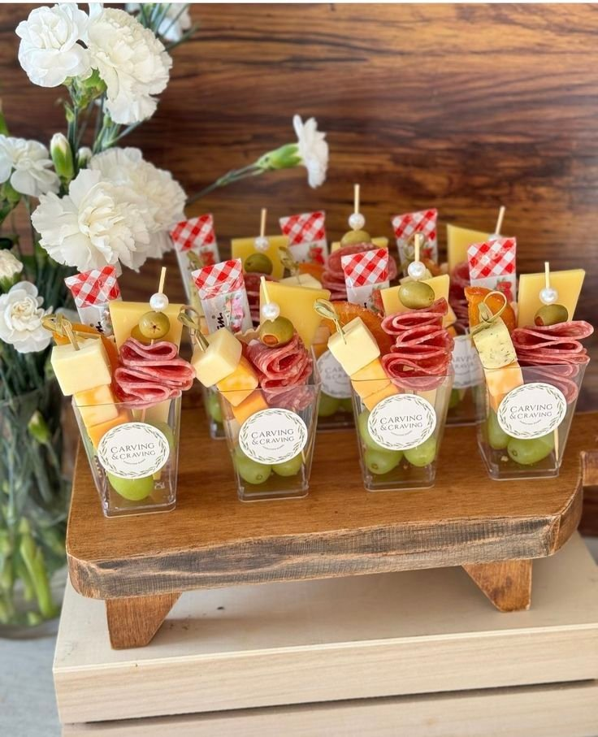
1. Go Luxe
This is the treat-yourself option, pulled out specifically to make guests feel a little spoiled.
Quality takes priority over quantity here.
A good truffle cheese, a few perfectly cured meats, something genuinely special rather than a lot of ordinary ingredients.
The result feels indulgent without tipping into overwhelming, which is exactly the balance a luxe cup should hit.
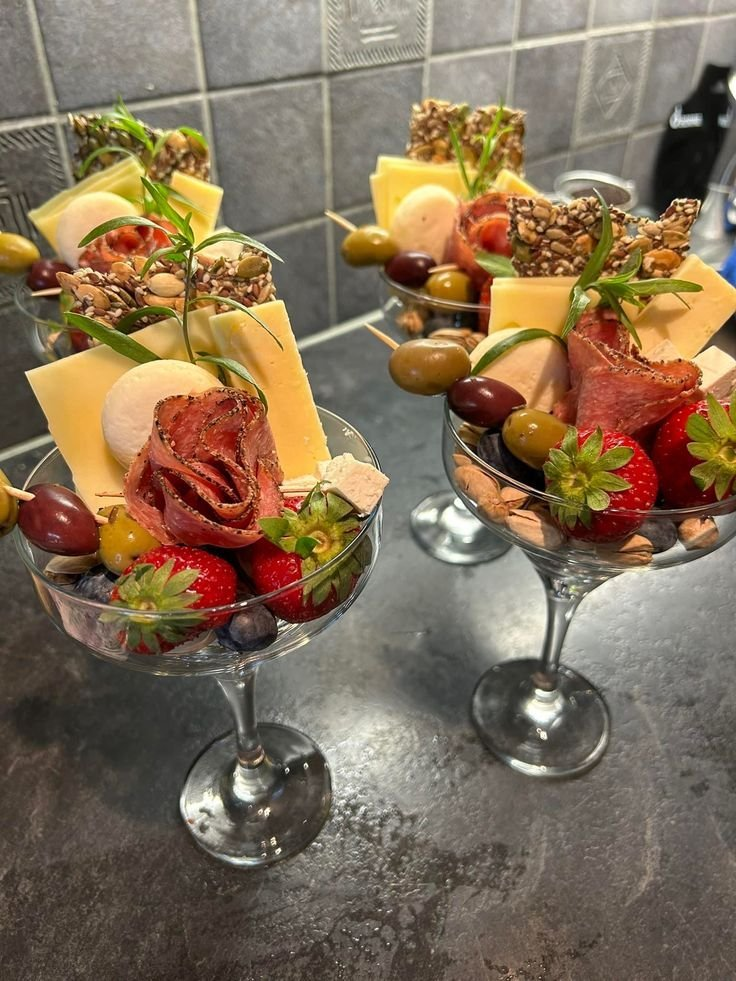
2. Pack a Mini Picnic Cup
This cup is built entirely around portability.
Outdoor events, road trips, and casual hangouts where a board just is not practical.
Everything inside stays sturdy and mess-free, which matters a lot more outdoors than it ever does at a dinner table.
Hand them out and move on.
No setup, no table required, no drama.
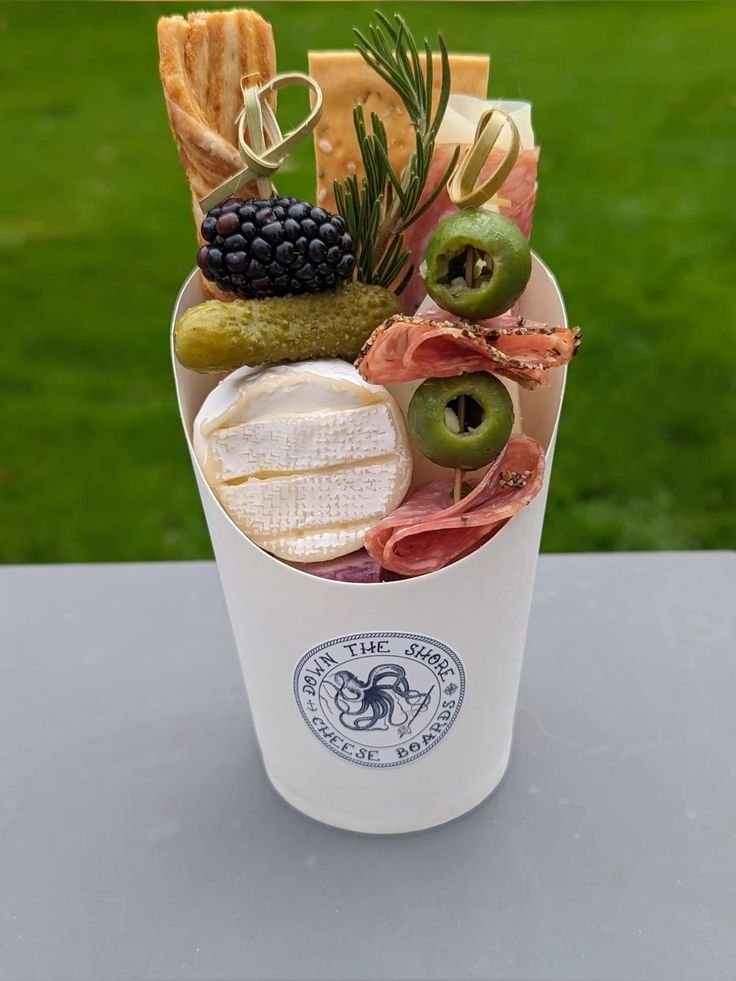
3. Build for Game Day
Game day snacks need to hold up through a lot of excitement, which rules out anything too delicate.
Bold, salty flavors, think pepperoni, sharp cheese, pretzels, survive distracted snacking far better than anything subtle.
These cups tend to disappear fast once the game gets going, so doubling the batch upfront saves a mid-game scramble.
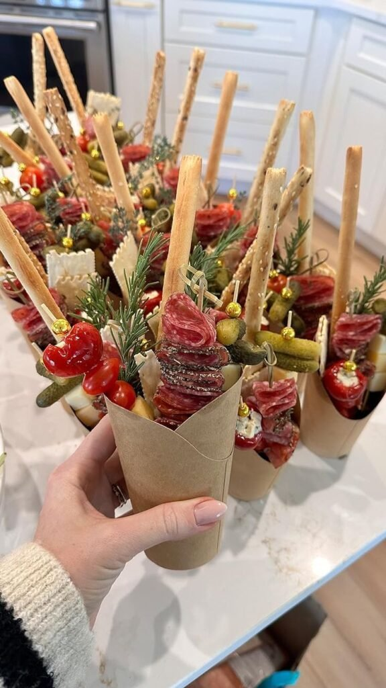
4. Match the Holiday
Holiday charcuterie cups set the mood almost instantly just by matching ingredients to the season's color palette.
Cranberries and rosemary work beautifully for winter, while berries and lighter cheeses carry the same idea into summer gatherings.
The result looks genuinely styled without any extra effort beyond picking ingredients that happen to match the occasion.
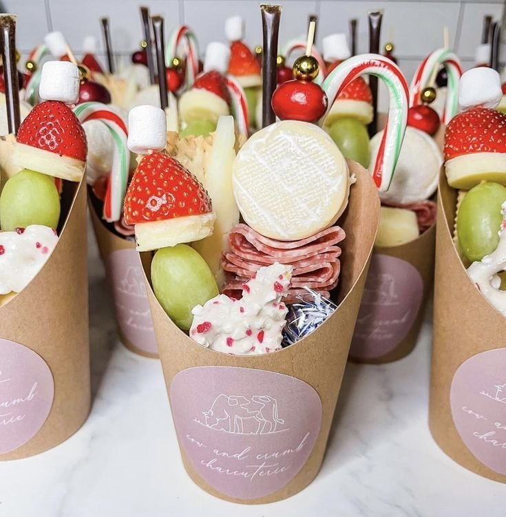
5. Go Fully Vegan
Vegan charcuterie cups surprise people in the best way when they are actually built with intention instead of being an afterthought.
Leaning on texture and seasoning, marinated vegetables, nuts, dried fruit, a sharp vegan cheese, keeps things interesting bite after bite.
Done well, this one tends to get requested again before the gathering is even over.
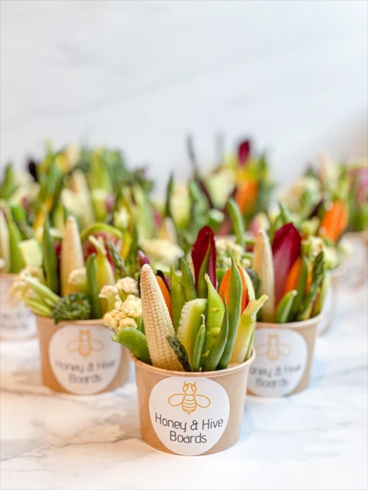
6. Keep It Keto-Friendly
Low-carb guests deserve more than a sad pile of lettuce.
Built around real protein and fat, this cup actually satisfies instead of just filling space.
Leaning into savory elements, a good brie, cured meats, olives, and a few pickled vegetables, keeps it hearty without relying on crackers to carry the cup.
Guests who eat this way tend to notice the effort immediately, even if the rest of the table does not clock the difference.

7. Go Mediterranean
This cup tastes fresh, bright, and just slightly addictive.
The move when something lighter still needs to feel satisfying.
Salty cheeses, crisp vegetables, and bold, briny flavors keep every bite refreshing instead of heavy.
It pairs especially well with sparkling water or a glass of white wine, which makes it an easy fit for daytime gatherings.
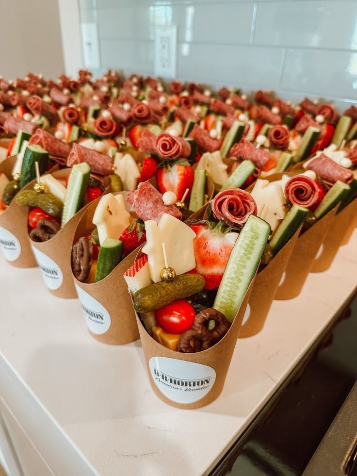
8. Lean Into Fall
Seasonal cups always feel a little more special, and the fall version leans warm and comforting without trying too hard to get there.
Cozy flavors and earthy colors, think warm spices, dried fruit, nuts, and a rustic cheese, make it look right at home on an autumn table.
Served alongside a mug of cider, the whole thing just works without needing anything else.
9. Make It Dessert
Dessert charcuterie cups make people unreasonably happy, and there is no real need to question why.
Treat it like a mini dessert sampler: sweet, a little crunchy, and indulgent without going overboard.
It turns an ordinary snack moment into something that feels closer to a small celebration.
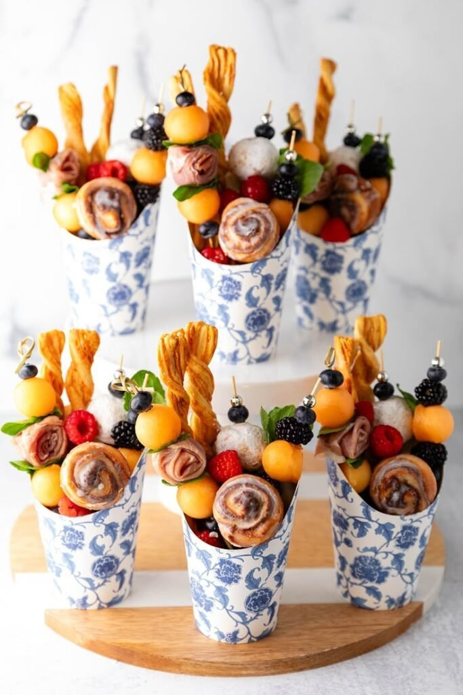
10. Try a Breakfast Version
Breakfast charcuterie cups sound unlikely until the first bite, and then they make complete sense.
These work especially well at a brunch or an early event.
Cozy and filling without tipping into heavy.
A small drizzle cup of honey or syrup on the side turns a good breakfast cup into a genuinely memorable one.
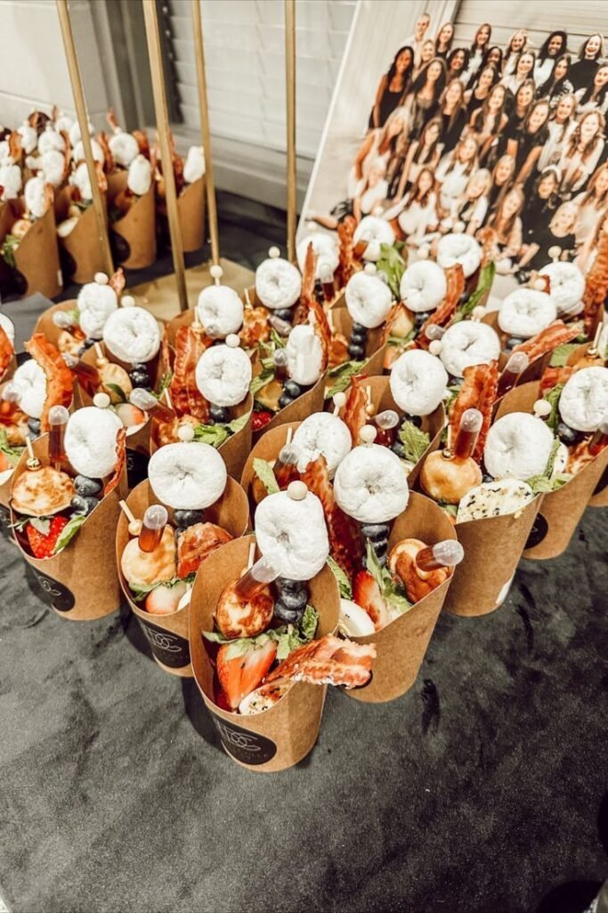
11. Do not Skip Vegetarian
Vegetarian guests deserve more than an afterthought, and this cup is built to prove that from the start.
Bold flavors and real texture variety keep it just as satisfying as anything meat-based on this list.
No sad, single vegetable allowed.
Done right, it holds its own next to every other cup on the table instead of reading as a compromise.
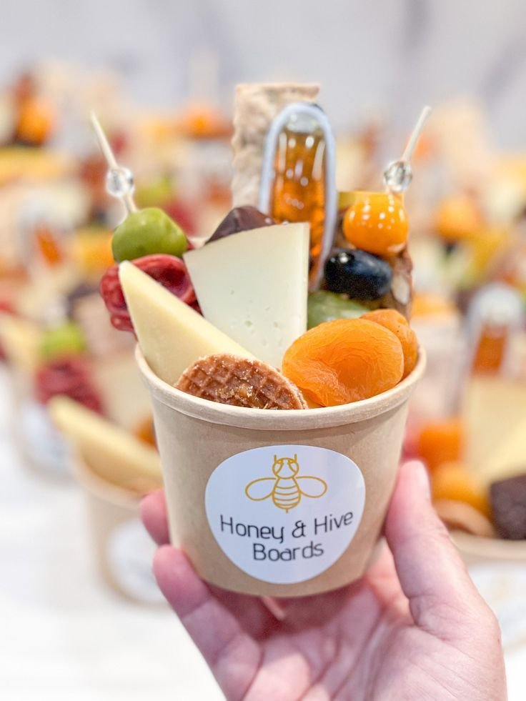
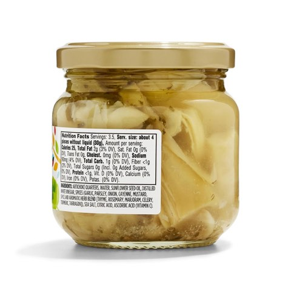
365 by Whole Foods Market Marinated Artichoke Quarters, 6.5 oz, Pack of 4
Shop on Amazon12. Keep One Kid-Friendly
Kids do not care about fancy folds or imported cheese.
They want color, fun shapes, and snacks they already recognize.
Keeping this one playful and approachable does double duty.
When the kids feel included, the parents relax too.
Skipping toothpicks here cuts down on the drama considerably.
Fewer small emergencies, more actual snacking.
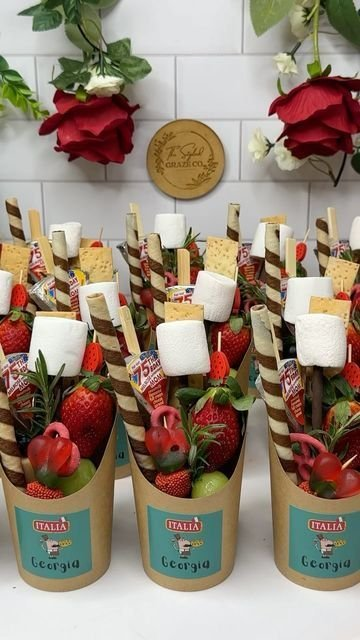
13. Go Sweet and Savory
Sweet-and-salty fans tend to hunt this one down first, and for good reason.
The contrast hits more than one craving at once.
Sharp cheese paired with fresh fruit and a touch of chocolate keeps every bite a little unexpected.
This cup tends to disappear fastest at any gathering, so it is worth making a couple of extras from the start.
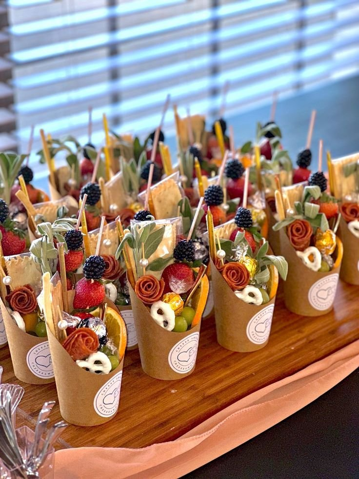
14. Go Italian-Inspired
For something that feels a little fancier without any extra effort, Italian flavors do most of the work on their own.
Prosciutto ribbons, mozzarella balls, cherry tomatoes, and olives layer together naturally, and a small basil leaf on top adds a little drama for free.
The combination smells as good as it tastes, and nobody needs to know how little effort actually went into it.
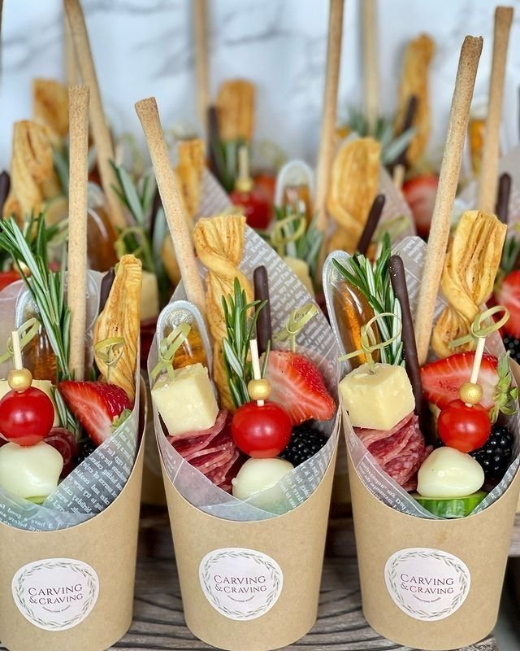
15. Start With the Classic Meat and Cheese
This one practically never misses.
If charcuterie cups had a starter pack, this would be it.
Folded salami, cheddar cubes, crackers, and grapes cover every base at once: familiar, comforting, and balanced enough that guests reach for it first.
Simple works for a reason here.
There is nothing to overthink, and that is exactly the point.
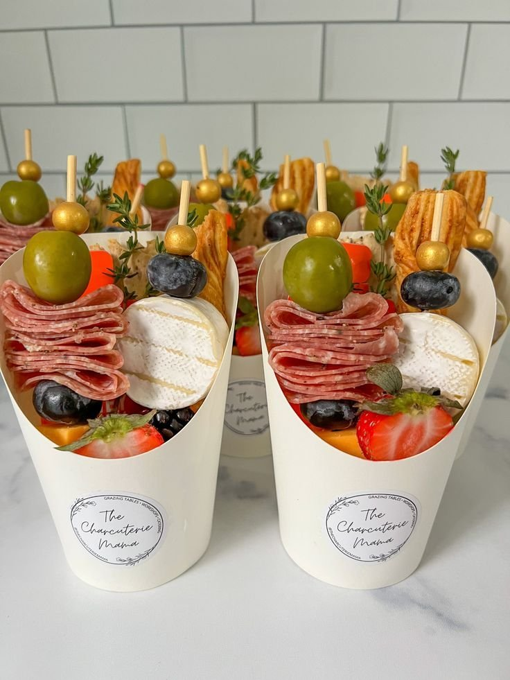
Molinari Italian Dry Salami Stick, 3 lb
Shop on AmazonA Couple of Mistakes Worth Avoiding
Overfilling is the most common one.
More food does not read as more generous, it just tips, spills, and stresses everyone out.
Leaving a little breathing room at the top looks cleaner and far more intentional.
Texture balance matters just as much.
Too many soft ingredients turn mushy fast, and too many crunchy ones dry out the whole bite.
Mixing soft, crunchy, sweet, and savory in every cup keeps it interesting start to finish.
Pick a Few, Not All Fifteen
There is no need to try all fifteen at once.
Pick whichever few actually fit the event, and build from there.
Guests remember how the food made them feel, not how complicated it looked to assemble.
Grab some cups, raid the fridge, and let the format do the rest.
It scales for a crowd, travels well, and adapts to just about any occasion without much extra effort.